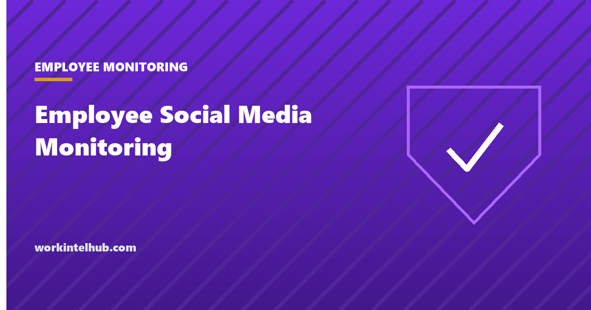

Employee Social Media Monitoring

Social media monitoring sits in a different legal position from the rest of employee monitoring, and the difference is not the one people expect. The constraint is rarely privacy law. It is federal labour law, which protects a great deal of what employers most want to act on.
This page covers what you may lawfully see, what you may not act on, why most social media policies are unenforceable as written, and where the whole exercise tends to cost more than it returns.
What employers may lawfully see
Start with the easy part, because it is broader than most policies assume.
A public post is public. There is no general prohibition on an employer reading something published to the world, and no expectation of privacy attaches to it. Activity on company equipment and company accounts is also visible, subject to whatever notice your state requires before monitoring begins.
What is off limits is compelled access. More than half the states now prohibit employers from requiring or requesting login credentials for personal accounts, with counts in the high twenties depending on how the statutes are grouped; the National Conference of State Legislatures maintains the tracker. Illinois is typical, and its provisions are set out in our page on the what Illinois law permits and prohibits.
These statutes generally reach further than passwords alone. They also prohibit requiring someone to open an account in a manager's presence, and requiring them to add a manager to a private group, which are the two workarounds people reach for when they learn they cannot ask for the password.
The part that catches employers out
Section 7 of the National Labor Relations Act protects employees who engage in concerted activity for mutual aid or protection. It applies to union and non-union workplaces alike, which is the fact most private employers do not know, and it protects discussion of wages, hours and working conditions.
The Board has long applied that protection to social media. Employees discussing pay, criticising management, or raising a shared complaint about working conditions in a public post are engaged in the same activity the Act protects offline, and the medium does not change the analysis. In Three D, LLC, involving Facebook comments about tax withholding errors, the Second Circuit agreed with the Board that the exchange was protected concerted activity.
Two boundaries are worth stating precisely, because they are where the protection ends. The activity must be concerted rather than an individual gripe pursued alone. And protection can be lost where conduct is so flagrant or extreme as to render the person unfit for further service, or where the statements are knowingly false.
The practical rule: a post complaining about the schedule, the pay or the manager is presumptively the riskiest thing to act on, not the safest. That is the reverse of most managers' instinct.
Why most social media policies are unenforceable
The Board's current standard for workplace rules comes from Stericycle, Inc., decided 2 August 2023. A rule is presumptively unlawful if it has a reasonable tendency to chill employees from exercising their rights, read from the perspective of a reasonable employee who is economically dependent on the employer and therefore inclined to read an ambiguous rule broadly.
That standard is what most handbook social media clauses fail. Phrases like "do not post anything that damages the company's reputation", "be respectful about colleagues online", or "do not discuss internal matters publicly" all read, to an economically dependent employee, as covering complaints about pay and working conditions. Whether you intended that is not the test.
Stericycle remains the operative standard as of 2026. The Board regained a quorum in January 2026 and is widely expected to revisit it, so this is an area to check rather than to assume, but the safe drafting position has not changed: narrow rules aimed at specific harms survive scrutiny under any version of the test, broad ones do not.
Do not disclose [Company] confidential information, including customer data, unreleased products and security details.
Do not speak on behalf of [Company] unless you are authorised to do so. If your role is identifiable and you discuss the industry, make clear you are speaking personally.
Harassment of colleagues is prohibited regardless of where it occurs.
Nothing in this policy restricts your right to discuss wages, hours or working conditions with colleagues or others.
The last line is the one that does the work, and it is also the cheapest thing on this page to add. A clear savings clause is not a cure for an overbroad rule, but its absence makes an ambiguous rule considerably harder to defend.
Off-duty conduct and lawful activity laws
Beyond labour law, several states restrict acting on lawful off-duty conduct. Illinois protects the use of lawful products off premises during non-working hours. New York and Colorado have broader lawful-activity statutes. California restricts action based on lawful conduct away from work.
The effect on social media monitoring is direct. A post showing someone doing something legal on their own time is, in those states, frequently not a lawful basis for action even where the employer finds it distasteful. The analysis has to run through whether there is a genuine work related consequence, not through whether the manager approves.
Because these rules follow the employee rather than the head office, a distributed team can be under several at once, exactly as with monitoring notice duties. Our state-by-state guide covers the same pattern for electronic monitoring.
The wider document these clauses live in has its own rules. Our guide to the employee handbook covers the standard that makes broad policy wording unenforceable.
What to do instead of monitoring
Continuous social media monitoring of a workforce is expensive, produces mostly noise, and generates the specific category of information you are least able to act on. Three narrower practices cover the legitimate needs.
- Respond to reports rather than searching. If a colleague raises a post, you review that post. This is how nearly every defensible action actually starts.
- Monitor the brand, not the people. Mentions of the company name is a marketing and security function and does not involve watching individuals.
- Handle regulated roles separately. Financial services and some public sector roles carry genuine supervision duties over business communications. Those are specific obligations with specific scopes, and they are not a warrant for general monitoring.
Consider also the cost side. Pew Research Center found in 2023 that 51% of US adults oppose employers recording what workers do on their work computers and 61% oppose tracking workers' movements, with opposition strongest among the youngest workers. Monitoring what people say on their own accounts sits further along that spectrum than anything in that survey.
The ethical tests before adopting anything here are the same as elsewhere, and are in our ethical monitoring playbook.
Key takeaways
- Public posts are fair to read. Compelled access is not: more than half the states prohibit asking for personal account credentials.
- Those statutes also bar requiring someone to open an account in a manager's presence or add a manager to a private group.
- NLRA Section 7 protects concerted discussion of wages, hours and working conditions, in union and non-union workplaces alike.
- A post complaining about pay or management is the riskiest thing to act on, not the safest.
- Under Stericycle a rule is presumptively unlawful if it has a reasonable tendency to chill protected activity.
- Broad clauses about reputation and respect fail that test. Narrow rules aimed at specific harms survive it.
- Several states restrict acting on lawful off-duty conduct, and those rules follow the employee.
- Respond to reports rather than searching. That is how almost every defensible action actually begins.
Frequently asked questions
Can employers legally monitor employee social media?
They can read what is public, and they can monitor activity on company equipment and accounts subject to any state notice requirement. What they cannot do in more than half the states is require or request credentials for a personal account, require someone to open it in a manager's presence, or require them to add a manager to a private group.
Can I be fired for a social media post about my job?
It depends heavily on what the post was about. NLRA Section 7 protects concerted activity for mutual aid or protection, which includes discussing wages, hours and working conditions with colleagues, in non-union workplaces too. Protection can be lost where conduct is extreme or statements are knowingly false, and an individual gripe pursued alone may not be concerted.
How many states prohibit employers asking for social media passwords?
More than half, with published counts in the high twenties depending on how the statutes are grouped. The National Conference of State Legislatures maintains the tracker. The laws generally cover more than passwords, reaching compelled access and forced group invitations as well.
Is a social media policy in the employee handbook enforceable?
Only if it is narrow. Under the NLRB's Stericycle standard a rule is presumptively unlawful if it has a reasonable tendency to chill protected activity, read from the perspective of an economically dependent employee. Clauses about not damaging the company's reputation or being respectful online typically fail, because they read as covering complaints about pay and conditions.
Can an employer discipline someone for legal off-duty conduct posted online?
In several states, no. Illinois protects lawful product use off premises during non-working hours, and New York, Colorado and California have lawful-activity or off-duty conduct protections. Because these rules follow the employee, a distributed workforce can be under several at once.
Should we use social media monitoring software?
For most employers it produces mostly noise and surfaces the category of information they are least able to act on. Responding to reports, monitoring brand mentions rather than individuals, and treating regulated roles separately covers the legitimate needs at a fraction of the cost and risk.
What should a social media policy actually say?
Protect confidential information, restrict speaking on behalf of the company without authorisation, prohibit harassment of colleagues wherever it occurs, and state explicitly that nothing in the policy restricts discussion of wages, hours or working conditions. That last savings clause is the cheapest protection available and its absence makes an ambiguous rule much harder to defend.